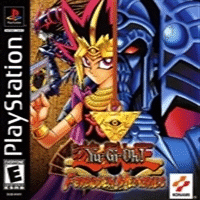

POPS VCD Brasil
Jogos traduzidos e dublados para POPStarter
Página Inicial
Baixar assets POPS
Interfaces
Todos os Jogos
Jogos dublados
Triologias
Yu-Gi-Oh - Forbidden Memories

Yu-Gi-Oh Forbidden Memories é um jogo eletrônico inspirado no anime e mangá Yu-Gi-Oh!.
Download